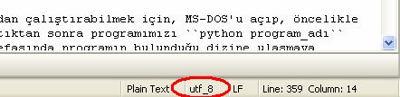

Çalışma Ortamı Tavsiyesi¶
Bu bölümde, Python programları geliştirirken rahat bir çalışma ortamı elde edebilmek için yapmanız gerekenleri sıralayacağız. Öncelikle Windows kullanıcılarından başlayalım.
Windows Kullanıcıları¶
Windows’ta bir Python programı yazıp kaydettikten sonra bu programı komut
satırından çalıştırabilmek için, MS-DOS’u açıp, öncelikle cd komutuyla
programın bulunduğu dizine ulaşmamız gerekir. İlgili dizine ulaştıktan sonra
programımızı python program_adı komutuyla çalıştırabiliriz. Ancak bir süre
sonra, programı çalıştırmak için her defasında programın bulunduğu dizine
ulaşmaya çalışmak sıkıcı bir hal alacaktır. Ama bu konuda çaresiz değiliz.
Windows 7, istediğimiz dizin altında bir MS-DOS ekranı açabilmemiz için bize çok güzel bir kolaylık sunuyor. Normal şartlar altında mesela masaüstünde bir MS-DOS ekranı açabilmek için şu yolu izlemeniz gerekiyor:
Windows logolu tuşa ve R tuşuna birlikte bas,
Açılan pencereye
cmdyazıp Enter düğmesine bas,Bu şekilde ulaştığın MS-DOS ekranında
cd Desktopkomutunu ver.
Bu üç adımla, MS-DOS ekranı üzerinden masaüstüne ulaşmış oluyoruz. Ama aslında bunun çok daha kolay bir yolu var: Masaüstüne sağ tıklarken Shift tuşunu da basılı tutarsanız, sağ-tık menüsünde ‘Komut penceresini burada aç’ adlı bir satır görürsünüz. İşte bu satıra tıklayarak, MS-DOS komut satırını tek harekette masaüstü konumunda çalıştırabilirsiniz. Elbette bu özellik sadece masaüstü için değil, bütün konumlar için geçerlidir. Yani bilgisayarınızda herhangi bir yere sağ tıklarken Shift tuşunu da basılı tutarak o konumda bir MS-DOS penceresi açabilirsiniz.
Ayrıca, herhangi bir klasör açıkken dosya tarayıcısının adres çubuğuna cmd
yazıp Enter düğmesine basarak da, o klasörün bulunduğu konumda bir komut
ekranı açabilirsiniz. Örneğin eğer o anda önünüzde ‘İndirilenler’ (veya
‘Karşıdan Yüklenenler’) dizini açıksa, adres çubuğuna (aşağıdaki resimde kırmızı
ile gösterilen bölge) cmd yazarak C:\Users\Kullanıcı\Downloads>
konumunda bir komut ekranı açabilirsiniz.
İkinci olarak, çalışma kolaylığı açısından Windows’ta dosya uzantılarının her zaman görünmesini sağlamanızı da tavsiye ederim. Windows ilk kurulduğunda hiçbir dosyanın uzantısı görünmez. Yani mesela deneme.txt adlı bir dosya Windows ilk kurulduğunda deneme şeklinde görünecektir. Bu durumda, bir dosyanın uzantısını değiştirmek istediğinizde bazı sıkıntılar yaşarsınız. Örneğin, masaüstünde bir metin dosyası oluşturduğunuzu varsayalım. Diyelim ki amacınız bu dosyanın içine bir şeyler yazıp daha sonra mesela bu dosyanın uzantısını .bat veya .py yapmak olsun. Böyle bir durumda, dosya uzantılarını göremediğiniz için, metin dosyasının uzantısını değiştirmeye çalıştığınızda deneme.bat.txt gibi bir dosya adı elde edebilirsiniz. Tabii ki bu dosya bir .bat dosyası değil, bir .txt, yani metin dosyasıdır. Dolayısıyla aslında dosya uzantısını değiştirememiş oluyorsunuz.
Yukarıdaki nedenlerden ötürü, ben size şu yolu takip ederek dosya uzantılarını her zaman görünür hale getirmenizi öneririm:
Başlat > Denetim Masası yolunu takip ederek denetim masasına ulaşın,
Denetim masasında ‘Görünüm ve Kişiselleştirme’ seçeneğine tıklayın,
Açılan menünün sağ tarafında ‘Klasör Seçenekleri’ satırına tıklayın,
Açılan pencerede ‘Görünüm’ sekmesine tıklayın,
‘Gelişmiş Ayarlar’ listesinde ‘Bilinen dosya türleri için uzantıları gizle’ seçeneğinin yanındaki onay işaretini kaldırın,
Uygula ve Tamam düğmelerine basarak bütün pencereleri kapatın,
Artık bütün dosyalarınızın uzantısı da görüneceği için, uzantı değiştirme işlemlerini çok daha kolay bir şekilde halledebilirsiniz.
GNU/Linux Kullanıcıları¶
Eğer KDE temelli bir GNU/Linux dağıtımı kullanıyorsanız, yazıp kaydettiğiniz Python programını barındıran dizin açıkken F4 tuşuna bastığınızda, komut satırı o dizin altında açılacaktır.
Unity ve GNOME kullanıcılarının ise benzer bir kolaylığa ulaşmak için nautilus-open-terminal adlı betiği sistemlerine kurmaları gerekiyor. Eğer Ubuntu kullanıyorsanız bu betiği şu komutla kurabilirsiniz:
sudo apt-get install nautilus-open-terminal
Bu betiği kurduktan sonra bilgisayarınızı yeniden başlatın veya şu komutu verin:
killall nautilus
Artık komut satırını hangi dizin altında başlatmak istiyorsanız o dizine sağ tıklayın. Menüler arasında Open in Terminal [Uçbirimde aç] adlı bir seçenek göreceksiniz. Buna tıkladığınızda o dizin altında bir komut satırı penceresi açılacaktır.
Metin Düzenleyici Ayarları¶
Daha önce de söylediğimiz gibi, Python ile program yazmak için istediğiniz metin düzenleyiciyi kullanabilirsiniz. Ama kodlarınızın kusursuz görünmesi ve hatasız çalışması için kullandığınız metin düzenleyicide birtakım ayarlamalar yapmanız gerekir. İşte bu bölümde bu ayarların neler olduğunu göstereceğiz.
Eğer programlarınızı IDLE ile yazıyorsanız aslında bir şey yapmanıza gerek yok. IDLE Python ile program yazmak üzere tasarlanmış bir düzenleyici olduğu için bu programın bütün ayarları Python ile uyumludur. Ama eğer IDLE dışında bir metin düzenleyici kullanıyorsanız bu düzenleyicide temel olarak şu ayarları yapmanız gerekir:
Sekme genişliğini [TAB width] 4 olarak ayarlayın.
Girinti genişliğini [Indent width] 4 olarak ayarlayın.
Girintilemede sekme yerine boşluk kullanmayı tercih edin [Use spaces instead of tabs]
Tercih edilen kodlama biçimini [Preferred encoding] utf-8 olarak ayarlayın.
Özellikle son söylediğimiz ‘kodlama biçimi’ ayarı çok önemlidir. Bu ayarın yanlış olması halinde, yazdığınız programı çalıştırmak istediğinizde şöyle bir hata alabilirsiniz:
SyntaxError: Non-UTF-8 code starting with '\xfe' in file deneme.py on line 1,
but no encoding declared; see http://python.org/dev/peps/pep-0263/ for details
Eğer yazdığınız bir program böyle bir hata mesajı üretiyorsa, ilk olarak metin düzenleyicinizin kodlama biçimi (encoding) ayarlarını kontrol edin. Metin düzenleyiciler genellikle tercih edilen kodlama biçimini aşağıdaki örnek resimde görüldüğü gibi, durum çubuğunda sürekli olarak gösterir.
Ancak kodlama biçimi doğru bir şekilde utf-8 olarak ayarlanmış metin düzenleyicilerde, özellikle internet üzerinden kod kopyalanıp yapıştırılması sırasında bu ayar siz farkında olmadan değişebilir. Böyle bir durumda da program çalışırken yukarıda bahsedilen hatayı alabilirsiniz. Dolayısıyla, programınızı yazdığınız metin düzenleyicinin kodlama ayarlarının siz farkında olmadan değişme ihtimaline karşı uyanık olmanız gerekir.
Elbette piyasada yüzlerce metin düzenleyici olduğu için yukarıda bahsedilen ayarların her metin düzenleyicide nasıl yapılacağını tek tek göstermemiz mümkün değil. Ancak iyi bir metin düzenleyicide yukarıdaki ayarların hepsi bulunur. Tek yapmanız gereken, bu ayarların, kullandığınız metin düzenleyicide nereden yapıldığını bulmak. Eğer kullandığınız metin düzenleyiciyi ayarlamakta zorlanıyorsanız, her zamanki gibi yazbel adresinde sıkıntınızı dile getirebilirsiniz.
‘Kodlama biçimi’ kavramından söz etmişken, Python’la ilgili önemli bir konuya daha değinelim. En başta da söylediğimiz gibi, şu anda piyasada Python iki farklı seri halinde geliştiriliyor. Bunlardan birinin 2.x serisi, öbürünün de 3.x serisi olduğunu biliyoruz. Python’ın 2.x serisinde Türkçe karakterlerin gösterimi ile ilgili çok ciddi problemler vardı. Örneğin Python’ın 2.x serisinde şöyle bir kod yazamıyorduk:
print("Günaydın Şirin Baba!")
Bu kodu bir dosyaya kaydedip, Python’ın 2.x serisine ait bir sürümle çalıştırmak istediğimizde Python bize şöyle bir hata mesajı veriyordu:
SyntaxError: Non-ASCII character '\xc3' in file
test.py on line 1, but no encoding declared;
see http://www.python.org/peps/pep-0263.html for details
Bunun sebebi, Python’ın 2.x sürümlerinde ASCII adlı kodlama biçiminin kullanılıyor olmasıdır. Zaten hata mesajına baktığımızda da, Python’ın ASCII olmayan karakterlerin varlığından şikayet ettiğini görüyoruz.
Yukarıdaki kodların çalışabilmesi için programımıza şöyle bir ekleme yapmamız gerekiyordu:
# -*- coding: utf-8 -*-
print("Günaydın Şirin Baba!")
Buradaki ilk satıra dikkat edin. Bu kodlarla yaptığımız şey, Python’ın ASCII adlı kodlama biçimi yerine UTF-8 adlı kodlama biçimini kullanmasını sağlamaktır. ASCII adlı kodlama biçimi Türkçe karakterleri gösteremez, ama UTF-8 adlı kodlama biçimi Türkçe karakterleri çok rahat bir şekilde gösterebilir.
Not
Kodlama biçimlerinden, ileride ayrıntılı bir şekilde söz edeceğiz. O yüzden bu anlattıklarımızda eğer anlamadığınız yerler olursa bunlara takılmanıza gerek yok.
Python’ın 3.x serisinin gelişi ile birlikte Python’da öntanımlı olarak ASCII
yerine UTF-8 kodlama biçimi kullanılmaya başlandı. Dolayısıyla yazdığımız
programlara # -*- coding: utf-8 -*- satırını eklememize gerek kalmadı. Çünkü
zaten Python UTF-8 kodlama biçimini öntanımlı olarak kendisi kullanıyor. Ama
eğer UTF-8 dışında başka bir kodlama biçimine ihtiyaç duyarsanız yine bu
satırdan yararlanabilirsiniz.
Örneğin GNU/Linux dağıtımlarının geleneksel olarak UTF-8 kodlama biçimi ile arası iyidir. Dolayısıyla eğer GNU/Linux üzerinde Python programları geliştiriyorsanız bu satırı hiç yazmadan bir ömür geçirebilirsiniz. Ama Windows işletim sistemleri UTF-8’i desteklemekle birlikte, bu destek GNU/Linux’taki kadar iyi değildir. Dolayısıyla zaman zaman Windows’ta UTF-8 dışında başka bir kodlama biçimini kullanmanız gerekebilir. Örneğin yazdığınız bir programda Türkçe karakterleri göremiyorsanız, programınızın ilk satırını şöyle düzenleyebilirsiniz:
# -*- coding: cp1254 -*-
Burada UTF-8 yerine cp1254 adlı kodlama biçimini kullanmış oluyoruz. Windows işletim sisteminde cp1254 adlı kodlama biçimi UTF-8’e kıyasla daha fazla desteklenir.
MS-DOS Komut Satırı Ayarları¶
Eğer yukarıda anlattığımız bütün ayarları doğru bir şekilde yapmanıza rağmen, özellikle MS-DOS komut satırında hala Türkçe karakterleri düzgün görüntüleyemiyorsanız, kullandığınız Windows sürümünün komut satırı, öntanımlı olarak Türkçe karakterleri gösteremeyen bir yazı tipine ayarlanmış olabilir. Dolayısıyla Türkçe karakterleri gösterebilmek için öncelikle uygun bir yazı tipi seçmeniz gerekir. Bunun için şu basamakları takip ediyoruz:
Komut satırını açıyoruz,
Açılan pencerenin başlık çubuğuna sağ tıklayarak, ‘özellikler’ menüsüne giriyoruz,
‘Yazı tipi’ sekmesinde yazı tipi olarak ‘Lucida Console’u (veya varsa ‘Consolas’ı) seçiyoruz,
‘Tamam’ düğmesine basıyoruz.
Eğer önünüze bir onay penceresi açılırsa, ‘Özellikleri aynı başlıkla ileride oluşturulacak pencereler için kaydet’ seçeneğini işaretleyip ‘Tamam’a bastıktan sonra çıkıyoruz.
Bu işlemin nasıl yapılacağını gösteren bir videoyu http://media.istihza.com/videos/ms-dos.swf adresinden izleyebilirsiniz.
Böylece MS-DOS komut satırı için Türkçe karakterleri gösterebilen bir yazı tipi belirlemiş olduk. Ancak bu, Türkçe karakterleri düzgün görüntülemeye yetmeyebilir. Eğer Türkçe karakterler hala düzgün görünmüyorsa, kullandığınız sistemde MS-DOS’un dil kodlaması Türkçe karakterleri görüntülemeye uygun olmayabilir. Türkçe karakterleri gösterebilen bir dil kodlaması belirlemek için komut satırında şu komutu verin:
chcp 1254
CP1254, Türkçe karakterleri de içeren bir dil kodlamasıdır. Bu komutu verdikten sonra artık Türkçe karakterleri düzgün görüntüleyebiliyor olmanız lazım.
Program Örnekleri¶
Yukarıda Python ve programlamaya ilişkin pek çok teknik bilgi verdik. Bunları öğrenmemiz, işlerimizi kuru kuruya ezberleyerek değil, anlayarak yapmamızı sağlaması açısından büyük önem taşıyordu. Ancak yukarıda pratiğe yönelik pek bir şey sunamadık. İşte bu bölümde pratik eksikliğimizi biraz olsun kapamaya dönük örnekler yapacağız.
Hatırlarsanız Python’la tanışmamızı sağlayan ilk örneğimiz ekrana basit bir “Merhaba Zalim Dünya!” cümlesi yazdırmaktı. Bu ilk örneği etkileşimli kabukta verdiğimizi hatırlıyorsunuz:
>>> "Merhaba Zalim Dünya!"
Ama artık programlarımızı dosyaya kaydetmeyi öğrendiğimize göre bu kodları etkileşimli kabuğa yazmak yerine bir dosyaya yazmayı tercih edebiliriz. Bu sayede yazdığımız kodlar kalıcılık kazanacaktır.
Hemen bir deneme yapalım. Boş bir metin belgesi açıp oraya şu satırı yazalım:
"Merhaba Zalim Dünya!"
Şimdi de bu dosyayı daha önce anlattığımız şekilde masaüstüne deneme.py adıyla kaydedip programımızı çalıştıralım.
Ne oldu? Programınız hiçbir çıktı vermeden kapandı, değil mi?
Hemen hatırlayacağınız gibi, print() fonksiyonu içine alınmayan ifadelerin
ekrana çıktı olarak verilebilmesi sadece etkileşimli kabuğa özgü bir durumdur.
Programlarımızı dosyadan çalıştırırken, print() fonksiyonu içine alınmayan
ifadeler ekranda görünmeyecektir. Yukarıdaki örnek bu durumun bir göstergesidir.
Dolayısıyla yukarıdaki ifadenin ekrana çıktı olarak verilebilmesi için o kodu
şöyle yazmamız gerekiyor:
print("Merhaba Zalim Dünya!")
Programınızı bu şekilde tekrar çalıştırdığınızda şöyle bir çıktı alıyoruz:
Merhaba Zalim Dünya!
Bu oldukça basit bir örnekti. Şimdi biraz daha karmaşık bir örnek verelim.
Yine hatırlayacağınız gibi, önceki bölümlerden birinde aylık yol masrafımızı hesaplayan bir program yazmıştık.
Orada elimizdeki verilerin şunlar olduğunu varsaymıştık:
Cumartesi-Pazar günleri çalışmıyoruz.
Dolayısıyla ayda 22 gün çalışıyoruz.
Evden işe gitmek için kullandığımız vasıtanın ücreti 1.5 TL
İşten eve dönmek için kullandığımız vasıtanın ücreti 1.4 TL
Elimizdeki bu bilgilere göre aylık yol masrafımızı hesaplamak için de şöyle bir formül üretmiştik:
masraf = gün sayısı x (gidiş ücreti + dönüş ücreti)
Gelin şimdi yukarıdaki bilgileri kullanarak programımızı dosyaya yazalım:
gün = 22
gidiş_ücreti = 1.5
dönüş_ücreti = 1.4
masraf = gün * (gidiş_ücreti + dönüş_ücreti)
print(masraf)
Tıpkı öncekiler gibi, bu programı da masaüstüne deneme.py adıyla kaydedelim ve
komut satırında masaüstünün bulunduğu konuma giderek python3 deneme.py
komutuyla programımızı çalıştıralım. Programı çalıştırdığımızda şöyle bir çıktı
alıyoruz:
63.8
Programımız gayet düzgün çalışıyor. Ancak gördüğünüz gibi, elde ettiğimiz çıktı çok yavan. Ama eğer isterseniz yukarıdaki programa daha profesyonel bir görünüm de kazandırabilirsiniz. Dikkatlice inceleyin:
gün = 22
gidiş_ücreti = 1.5
dönüş_ücreti = 1.4
masraf = gün * (gidiş_ücreti + dönüş_ücreti)
print("-"*30)
print("çalışılan gün sayısı\t:", gün)
print("işe gidiş ücreti\t:", gidiş_ücreti)
print("işten dönüş ücreti\t:", dönüş_ücreti)
print("-"*30)
print("AYLIK YOL MASRAFI\t:", masraf)
Bu defa programımız şöyle bir çıktı verdi:
------------------------------
çalışılan gün sayısı : 22
işe gidiş ücreti : 1.5
işten dönüş ücreti : 1.4
------------------------------
AYLIK YOL MASRAFI : 63.8
Gördüğünüz gibi, bu kodlar sayesinde kullanıcıya daha ayrıntılı bilgi vermiş olduk. Üstelik elde ettiğimiz çıktı daha şık görünüyor.
Yukarıdaki kodlarda şimdiye kadar öğrenmediğimiz hiçbir şey yok. Yukarıdaki kodların tamamını anlayabilecek kadar Python bilgimiz var. Bu kodlarda çok basit parçaları bir araya getirerek istediğimiz çıktıyı nasıl elde ettiğimizi dikkatlice inceleyin. Mesela elde etmek istediğimiz çıktının görünüşünü güzelleştirmek için iki yerde şu satırı kullandık:
print("-"*30)
Böylece 30 adet - işaretini yan yana basmış olduk. Bu sayede elde ettiğimiz çıktı daha derli toplu bir görünüme kavuştu. Ayrıca kodlarımız içinde \t adlı kaçış dizisinden de yararlandık. Böylelikle ekrana basılan çıktılar alt alta düzgün bir şekilde hizalanmış oldu.
Bu arada, yukarıdaki kodlar sayesinde değişken kullanımının işlerimizi ne kadar kolaylaştırdığına da birebir tanık olduk. Eğer değişkenler olmasaydı yukarıdaki kodları şöyle yazacaktık:
print("-"*30)
print("çalışılan gün sayısı\t:", 22)
print("işe gidiş ücreti\t:", 1.5)
print("işten dönüş ücreti\t:", 1.4)
print("-"*30)
print("AYLIK YOL MASRAFI\t:", 22 * (1.5 + 1.4))
Eğer günün birinde mesela çalışılan gün sayısı değişirse yukarıdaki kodların iki farklı yerinde değişiklik yapmamız gerekecekti. Bu kodların çok büyük bir programın parçası olduğunu düşünün. Kodların içinde değer arayıp bunları tek tek değiştirmeye kalkışmanın ne kadar hataya açık bir yöntem olduğunu tahmin edebilirsiniz. Ama değişkenler sayesinde, sadece tek bir yerde değişiklik yaparak kodlarımızı güncel tutabiliriz. Mesela çalışılan gün sayısı 20’ye düşmüş olsun:
gün = 20
gidiş_ücreti = 1.5
dönüş_ücreti = 1.4
masraf = gün * (gidiş_ücreti + dönüş_ücreti)
print("-"*30)
print("çalışılan gün sayısı\t:", gün)
print("işe gidiş ücreti\t:", gidiş_ücreti)
print("işten dönüş ücreti\t:", dönüş_ücreti)
print("-"*30)
print("AYLIK YOL MASRAFI\t:", masraf)
Gördüğünüz gibi, sadece en baştaki gün adlı değişkenin değerini değiştirerek istediğimiz sonucu elde ettik.
Kendiniz isterseniz yukarıdaki örnekleri çeşitlendirebilirsiniz.
Gördüğünüz gibi, Python’da az da olsa işe yarar bir şeyler yazabilmek için çok şey bilmemize gerek yok. Sırf şu ana kadar öğrendiklerimizi kullanarak bile ufak tefek programlar yazabiliyoruz.
Önemli Not
Sorularınızı yorumlarda dile getirmek yerine Yazbel Forumunda sorarsanız çok daha hızlı cevap alabilirsiniz.Belgelerdeki bir hata veya eksiği dile getirecekseniz lütfen yorumları kullanmak yerine Github'da bir konu (issue) açın.
Eğer yazdığınız yorum içinde kod kullanacaksanız kodlarınızı <pre><code> etiketleri içine alın. Örneğin:
<pre><code class="python">
print("Merhaba Dünya!")
</code></pre>

{kind=link}